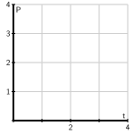

Section 7.6 Population Growth and the Logistic Equation
Motivating Questions
How can we use differential equations to realistically model the growth of a population?
How can we assess the accuracy of our models?
The growth of the earth's population is one of the pressing issues of our time. Will the population continue to grow? Or will it perhaps level off at some point, and if so, when? In this section, we look at two ways in which we may use differential equations to help us address these questions.
Before we begin, let's consider again two important differential equations that we have seen in earlier work this chapter.
Preview Activity 7.6.1.
Recall that one model for population growth states that a population grows at a rate proportional to its size.
-
We begin with the differential equation
\begin{equation*} \frac{dP}{dt} = \frac12 P\text{.} \end{equation*}Sketch a slope field below as well as a few typical solutions on the axes provided.
 Find all equilibrium solutions of the equation \(\frac{dP}{dt} = \frac12 P\) and classify them as stable or unstable.
If \(P(0)\) is positive, describe the long-term behavior of the solution to \(\frac{dP}{dt} = \frac12 P\text{.}\)
-
Let's now consider a modified differential equation given by
\begin{equation*} \frac{dP}{dt} = \frac 12 P(3-P)\text{.} \end{equation*}As before, sketch a slope field as well as a few typical solutions on the following axes provided.
Find any equilibrium solutions and classify them as stable or unstable.
If \(P(0)\) is positive, describe the long-term behavior of the solution.
Subsection 7.6.1 The earth's population
We will now begin studying the earth's population. To get started, in Table 7.6.1 are some data for the earth's population in recent years that we will use in our investigations.
| Year | 1998 | 1999 | 2000 | 2001 | 2002 | 2005 | 2006 | 2007 | 2008 | 2009 | 2010 |
| Pop (billions) |
\(5.932\) | \(6.008\) | \(6.084\) | \(6.159\) | \(6.234\) | \(6.456\) | \(6.531\) | \(6.606\) | \(6.681\) | \(6.756\) | \(6.831\) |
Activity 7.6.2.
Our first model will be based on the following assumption:
The rate of change of the population is proportional to the population.
On the face of it, this seems pretty reasonable. When there is a relatively small number of people, there will be fewer births and deaths so the rate of change will be small. When there is a larger number of people, there will be more births and deaths so we expect a larger rate of change.
If \(P(t)\) is the population \(t\) years after the year 2000, we may express this assumption as
where \(k\) is a constant of proportionality.
Use the data in the table to estimate the derivative \(P'(0)\) using a central difference. Assume that \(t=0\) corresponds to the year 2000.
What is the population \(P(0)\text{?}\)
Use your results from (a) and (b) to estimate the constant of proportionality \(k\) in the differential equation.
-
Now that we know the value of \(k\text{,}\) we have the initial value problem
\begin{equation*} \frac{dP}{dt} = kP, \ P(0) = 6.084\text{.} \end{equation*}Find the solution to this initial value problem.
What does your solution predict for the population in the year 2010? Is this close to the actual population given in the table?
When does your solution predict that the population will reach 12 billion?
What does your solution predict for the population in the year 2500?
Do you think this is a reasonable model for the earth's population? Why or why not? Explain your thinking using a couple of complete sentences.
Our work in Activity 7.6.2 shows that that the exponential model is fairly accurate for years relatively close to 2000. However, if we go too far into the future, the model predicts increasingly large rates of change, which causes the population to grow arbitrarily large. This does not make much sense since it is unrealistic to expect that the earth would be able to support such a large population.
The constant \(k\) in the differential equation has an important interpretation. Let's rewrite the differential equation \(\frac{dP}{dt} = kP\) by solving for \(k\text{,}\) so that we have
We see that \(k\) is the ratio of the rate of change to the population; in other words, it is the contribution to the rate of change from a single person. We call this the per capita growth rate.
In the exponential model we introduced in Activity 7.6.2, the per capita growth rate is constant. This means that when the population is large, the per capita growth rate is the same as when the population is small. It is natural to think that the per capita growth rate should decrease when the population becomes large, since there will not be enough resources to support so many people. We expect it would be a more realistic model to assume that the per capita growth rate depends on the population \(P\text{.}\)
In the previous activity, we computed the per capita growth rate in a single year by computing \(k\text{,}\) the quotient of \(\frac{dP}{dt}\) and \(P\) (which we did for \(t = 0\)). If we return to the data in Table 7.6.1 and compute the per capita growth rate over a range of years, we generate the data shown in Figure 7.6.2, which shows how the per capita growth rate is a function of the population, \(P\text{.}\)

From the data, we see that the per capita growth rate appears to decrease as the population increases. In fact, the points seem to lie very close to a line, which is shown at two different scales in Figure 7.6.3.


Looking at this line carefully, we can find its equation to be
If we multiply both sides by \(P\text{,}\) we arrive at the differential equation
Graphing the dependence of \(dP/dt\) on the population \(P\text{,}\) we see that this differential equation demonstrates a quadratic relationship between \(\frac{dP}{dt}\) and \(P\text{,}\) as shown in Figure 7.6.4.

The equation \(\frac{dP}{dt} = P(0.025 - 0.002P)\) is an example of the logistic equation, and is the second model for population growth that we will consider. We expect that it will be more realistic, because the per capita growth rate is a decreasing function of the population.
Indeed, the graph in Figure 7.6.4 shows that there are two equilibrium solutions, \(P=0\text{,}\) which is unstable, and \(P=12.5\text{,}\) which is a stable equilibrium. The graph shows that any solution with \(P(0) \gt 0\) will eventually stabilize around 12.5. Thus, our model predicts the world's population will eventually stabilize around 12.5 billion.
A prediction for the long-term behavior of the population is a valuable conclusion to draw from our differential equation. We would, however, also like to answer some quantitative questions. For instance, how long will it take to reach a population of 10 billion? To answer this question, we need to find an explicit solution of the equation.
Subsection 7.6.2 Solving the logistic differential equation
Since we would like to apply the logistic model in more general situations, we state the logistic equation in its more general form,
The equilibrium solutions here are \(P=0\) and \(1-\frac PN = 0\text{,}\) which shows that \(P=N\text{.}\) The equilibrium at \(P=N\) is called the carrying capacity of the population for it represents the stable population that can be sustained by the environment.
We now solve the logistic equation (7.6.1). The equation is separable, so we separate the variables
and integrate to find that
To find the antiderivative on the left, we use the partial fraction decomposition
Now we are ready to integrate, with
On the left, observe that \(N\) is constant, so we can remove a factor of \(\frac{1}{N}\) and antidifferentiate to find that
Multiplying both sides of this last equation by \(N\) and using a rule of logarithms, we next find that
From the definition of the logarithm, replacing \(e^C\) with \(C\text{,}\) and letting \(C\) absorb the absolute value signs, we now know that
At this point, all that remains is to determine \(C\) and solve algebraically for \(P\text{.}\)
If the initial population is \(P(0) = P_0\text{,}\) then it follows that \(C = \frac{P_0}{N-P_0}\text{,}\) so
We will solve this equation for \(P\) by multiplying both sides by \((N-P)(N-P_0)\) to obtain
Solving for \(P_0Ne^{kNt}\text{,}\) expanding, and factoring, it follows that
Dividing to solve for \(P\text{,}\) we see that
Finally, we choose to multiply the numerator and denominator by \(\frac{1}{P_0}e^{-kNt}\) to obtain
While that was a lot of algebra, notice the result: we have found an explicit solution to the logistic equation.
Solution to the Logistic Equation.
The solution to the initial value problem
is
For the logistic equation describing the earth's population that we worked with earlier in this section, we have
This gives the solution
whose graph is shown in Figure 7.6.5.

The graph shows the population leveling off at 12.5 billion, as we expected, and that the population will be around 10 billion in the year 2050. These results, which we have found using a relatively simple mathematical model, agree fairly well with predictions made using a much more sophisticated model developed by the United Nations.
The logistic equation is good for modeling any situation in which limited growth is possible. For instance, it could model the spread of a flu virus through a population contained on a cruise ship, the rate at which a rumor spreads within a small town, or the behavior of an animal population on an island. Through our work in this section, we have completely solved the logistic equation, regardless of the values of the constants \(N\text{,}\) \(k\text{,}\) and \(P_0\text{.}\) Anytime we encounter a logistic equation, we can apply the formula we found in Equation (7.6.2).
Activity 7.6.3.
Consider the logistic equation
with the graph of \(\frac{dP}{dt}\) vs. \(P\) shown in Figure 7.6.6.

At what value of \(P\) is the rate of change greatest?
Consider the model for the earth's population that we created. At what value of \(P\) is the rate of change greatest? How does that compare to the population in recent years?
According to the model we developed, what will the population be in the year 2100?
According to the model we developed, when will the population reach 9 billion?
-
Now consider the general solution to the general logistic initial value problem that we found, given by
\begin{equation*} P(t) = \frac{N}{\left(\frac{N-P_0}{P_0}\right)e^{-kNt} + 1}\text{.} \end{equation*}Verify algebraically that \(P(0) = P_0\) and that \(\lim_{t\to\infty} P(t) = N\text{.}\)
Subsection 7.6.3 Summary
If we assume that the rate of growth of a population is proportional to the population, we are led to a model in which the population grows without bound and at a rate that grows without bound.
By assuming that the per capita growth rate decreases as the population grows, we are led to the logistic model of population growth, which predicts that the population will eventually stabilize at the carrying capacity.
Exercises 7.6.4 Exercises
1. Analyzing a logistic equation.
The slope field for a population \(P\) modeled by \(dP/dt = 2.5 P - 5 P^2\) is shown in the figure below.

(a) On a print-out of the slope field, sketch three non-zero solution curves showing different types of behavior for the population \(P\text{.}\) Give an initial condition that will produce each:
\(P(0) =\) ,
\(P(0) =\) , and
\(P(0) =\) .
(b) Is there a stable value of the population? If so, give the value; if not, enter none:
Stable value =
(c) Considering the shape of solutions for the population, give any intervals for which the following are true. If no such interval exists, enter none, and if there are multiple intervals, give them as a list. (Thus, if solutions are increasing when \(P\) is between 1 and 3, enter (1,3) for that answer; if they are decreasing when \(P\) is between 1 and 2 or between 3 and 4, enter (1,2),(3,4). Note that your answers may reflect the fact that \(P\) is a population.)
\(P\) is increasing when \(P\) is in
\(P\) is decreasing when \(P\) is in
Think about what these conditions mean for the population, and be sure that you are able to explain that.
In the long-run, what is the most likely outcome for the population?
\(P\to\)
(Enter infinity if the population grows without bound.)
Are there any inflection points in the solutions for the population? If so, give them as a comma-separated list (e.g., 1,3); if not, enter none.
Inflection points are at \(P =\)
Be sure you can explain what the meaning of the inflection points is for the population.
(d) Sketch a graph of \(dP/dt\) against \(P\text{.}\) Use your graph to answer the following questions.
When is \(dP/dt\) positive?
When \(P\) is in
When is \(dP/dt\) negative?
When \(P\) is in
(Give your answers as intervals or a list of intervals.)
When is \(dP/dt\) zero?
When \(P=\)
(If there is more than one answer, give a list of answers, e.g., 1,2.)
When is \(dP/dt\) at a maximum?
When \(P=\)
Be sure that you can see how the shape of your graph of \(dP/dt\) explains the shape of solution curves to the differential equation.
2. Analyzing a logistic model.
The table below gives the percentage, \(P\text{,}\) of households with a VCR, as a function of year.
| Year | 1978 | 1979 | 1980 | 1981 | 1982 | 1983 | 1984 |
| P | 0.3 | 0.5 | 1.1 | 1.8 | 3.1 | 5.5 | 10.6 |
| Year | 1985 | 1986 | 1987 | 1988 | 1989 | 1990 | 1991 |
| P | 20.8 | 36.0 | 48.7 | 58.0 | 64.6 | 71.9 | 71.9 |
(a) A logistic model is a good one to use for these data. Explain why this might be the case: logically, how large would the growth in VCR ownership be when they are first introduced? How large can the ownership ever be?
We can also investigate this by estimating the growth rate of \(P\) for the given data. Do this at the beginning, middle, and near the end of the data:
\(P'(1980) \approx\)
\(P'(1985) \approx\)
\(P'(1990) \approx\)
Be sure you can explain why this suggests that a logistic model is appropriate.
(b) Use the data to estimate the year when the point of inflection of \(P\) occurs.
The inflection point occurs approximately at .
(Give the year in which it occurs.)
What percent of households had VCRs then? \(P =\)
What limiting value \(L\) does this point of inflection predict (note that if the logistic model is reasonable, this prediction should agree with the data for 1990 and 1991)?
\(L =\)
(c) The best logistic equation (solution to the logistic differential equation) for these data turns out to be the following.
What limiting value does this predict?
\(L =\)
3. Finding a logistic function for an infection model.
The total number of people infected with a virus often grows like a logistic curve. Suppose that 10 people originally have the virus, and that in the early stages of the virus (with time, \(t\text{,}\) measured in weeks), the number of people infected is increasing exponentially with \(k=1.7\text{.}\) It is estimated that, in the long run, approximately 7750 people become infected.
(a) Use this information to find a logistic function to model this situation.
\(P =\)
(b) Sketch a graph of your answer to part (a). Use your graph to estimate the length of time until the rate at which people are becoming infected starts to decrease. What is the vertical coordinate at this point?
vertical coordinate =
4. Analyzing a population growth model.
Any population, \(P\text{,}\) for which we can ignore immigration, satisfies
For organisms which need a partner for reproduction but rely on a chance encounter for meeting a mate, the birth rate is proportional to the square of the population. Thus, the population of such a type of organism satisfies a differential equation of the form
This problem investigates the solutions to such an equation.
(a) Sketch a graph of \(dP/dt\) against \(P\text{.}\) Note when \(dP/dt\) is positive and negative.
\(dP/dt \lt 0\) when \(P\) is in
\(dP/dt > 0\) when \(P\) is in
(Your answers may involve a and b. Give your answers as an interval or list of intervals: thus, if dP/dt is less than zero for P between 1 and 3 and P greater than 4, enter (1,3),(4,infinity).)
(b) Use this graph to sketch the shape of solution curves with various initial values: use your answers in part (a), and where \(dP/dt\) is increasing and decreasing to decide what the shape of the curves has to be. Based on your solution curves, why is \(P=b/a\) called the threshold population?
If \(P(0) > b/a\text{,}\) what happens to \(P\) in the long run?
\(P\to\)
If \(P(0) = b/a\text{,}\) what happens to \(P\) in the long run?
\(P\to\)
If \(P(0) \lt b/a\text{,}\) what happens to \(P\) in the long run?
\(P\to\)
5.
The logistic equation may be used to model how a rumor spreads through a group of people. Suppose that \(p(t)\) is the fraction of people that have heard the rumor on day \(t\text{.}\) The equation
describes how \(p\) changes. Suppose initially that one-tenth of the people have heard the rumor; that is, \(p(0) = 0.1\text{.}\)
What happens to \(p(t)\) after a very long time?
Determine a formula for the function \(p(t)\text{.}\)
At what time is \(p\) changing most rapidly?
How long does it take before 80% of the people have heard the rumor?
6.
Suppose that \(b(t)\) measures the number of bacteria living in a colony in a Petri dish, where \(b\) is measured in thousands and \(t\) is measured in days. One day, you measure that there are 6,000 bacteria and the per capita growth rate is 3. A few days later, you measure that there are 9,000 bacteria and the per capita growth rate is 2.
Assume that the per capita growth rate \(\frac{db/dt}{b}\) is a linear function of \(b\text{.}\) Use the measurements to find this function and write a logistic equation to describe \(\frac{db}{dt}\text{.}\)
What is the carrying capacity for the bacteria?
At what population is the number of bacteria increasing most rapidly?
If there are initially 1,000 bacteria, how long will it take to reach 80% of the carrying capacity?
7.
Suppose that the population of a species of fish is controlled by the logistic equation
where \(P\) is measured in thousands of fish and \(t\) is measured in years.
What is the carrying capacity of this population?
Suppose that a long time has passed and that the fish population is stable at the carrying capacity. At this time, humans begin harvesting 20% of the fish every year. Modify the differential equation by adding a term to incorporate the harvesting of fish.
What is the new carrying capacity?
What will the fish population be one year after the harvesting begins?
How long will it take for the population to be within 10% of the carrying capacity?